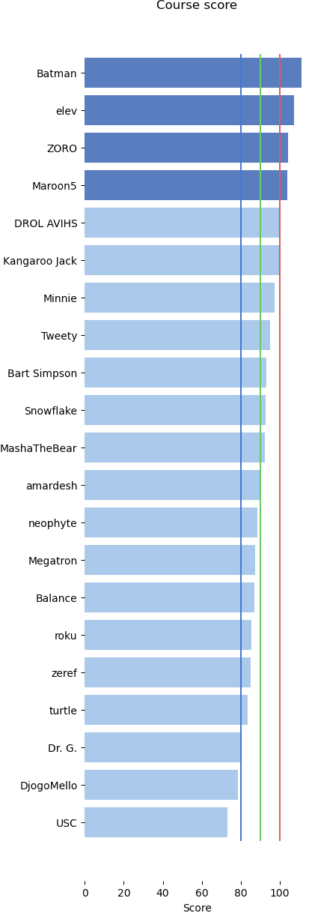
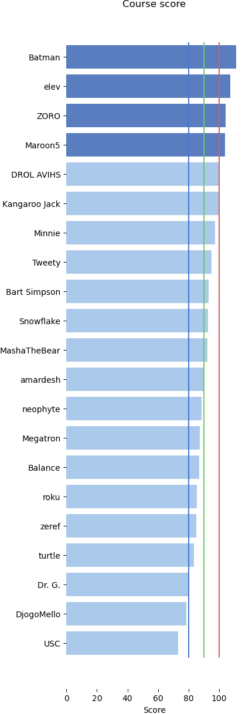

Design & Analysis: Algorithms
05: Recurrences (master theorem)
Outline of the lecture
- Recursion Trees (recap)
- The Master Theorem
- Annihilators
Relative Ranking
 

Send me your private nicknames ASAP
Recursion Trees
Example 2: $T(n) = 3T(n/4) + n^2$
- We can see that the i-th level of the tree sums to $(3/16)^in^2$.
- Further the depth of the tree is $\log_4 n$
$n/4^d = 1$ implies that $d = \log_4 n$- So we can see that $T(n) = \sum_{i=0}^{\log_4 n} (3/16)^in^2$
Solution
\begin{align} T(n) & \fragment{1}{= \sum_{i=0}^{\log_4 n} (3/16)^in^2} \\ & \fragment{2}{< n^2 \sum_{i=0}^{\infty} (3/16)^i}\\ & \fragment{3}{= \frac{1}{1-{3\over 16}} n^2}\\ & \fragment{4}{ = O(n^2)\\} \end{align}Master Theorem
Master Theorem
- Divide and conquer algorithms often give us running-time recurrences of the form $T(n) = a T(n/b) + f (n)$
- Where $a$ and $b$ are constants and $f(n)$ is some other function.
- The so-called “Master Method” gives us a general method for solving such recurrences when $f(n)$ is a simple polynomial.
Master Theorem
- Unfortunately, the Master Theorem doesn’t work for all functions $f(n)$
- Further many useful recurrences don’t look like $T(n) = a T(n/b) + f (n)$
- However, the theorem allows for very fast solution of recurrences when it applies
Master Theorem
- Master Theorem is just a special case of the use of recursion trees
- Consider equation $T(n) = a T (n/b) + f (n)$
- We start by drawing a recursion tree
Recursion Tree
- The root contains the value $f(n)$
- It has a children, each of which contains the value $f(\frac{n}{b})$
- Each of these nodes has a children, containing the value $f(\frac{n}{b^2})$
- In general, level $i$ contains $a^i$ nodes with values $f(\frac{n}{b^i})$
- Hence the sum of the nodes at the $i^{\mathrm{th}}$ level is $a^i f(\frac{n}{b^i})$
Details
- The tree stops when we get to the base case for the recurrence
- We’ll assume $T(1) = f(1) = \Theta(1)$ is the base case
- Thus the depth of the tree is $\log_b n$ and there are $\log_b n + 1$ levels
Recursion Tree
- Let $T(n)$ be the sum of all values stored in all levels of the tree: \begin{align} T (n) & = f (n)+a f (n/b)+a^2 f (n/b^2)+\\ & \dots+a^i f (n/b^i)+\dots+a^L f (n/b^L) \end{align}
- Where $L = \log_b n$ is the depth of the tree
- Since $f(1) = \Theta(1)$, the last term of this summation is $\Theta(a^L) = \Theta(a\log_b n) = \Theta(n\log_b a)$
An aside: a "$\log$ fact"
- It’s not hard to see that $a^{\log_b n} = n^{\log_b a}$ \begin{align} a^{\log_b n} & = n^{\log_b a} \mbox{ take }\log_b\\ \log_b a^{\log_b n} & = \log_b n^{\log_b a}\\ \log_b n \log_b a & = \log_b a \log_b n \end{align}
Master Theorem
- We can now state the Master Theorem
- In a way slightly different from the book
- Note:
The Master Method is just a “short cut” for the recursion tree method. It is less powerful than recursion trees.
Master Method (the theorem)
The recurrence $T(n) = aT(n/b) + f(n)$ can be solved as follows:
- If $a f (n/b) \leq Kf(n)$ for some constant $K < 1$, then
$T(n) = \Theta(f (n))$ . - If $a f (n/b) \geq K f(n)$ for some constant $K > 1$, then
$T(n) = \Theta(n^{\log_b a})$ . - If $a f (n/b) = f (n)$, then
$T(n) = \Theta(f(n) \log_b n)$ .
$T (n) = f (n)+a f (n/b)+a^2 f (n/b^2)+ \dots+a^i f (n/b^i)+\dots+a^L f (n/b^L)$
Proof (1/3)
If $a f (n/b) \leq Kf(n)$ for some constant $K < 1$, then $T(n) = \Theta(f (n))$.
- If $f(n)$ is a constant factor larger than $a f(n/b)$, then the sum is a descending geometric series. The sum of any geometric series is a constant times its largest term. In this case, the largest term is the first term $\Theta(f (n))$.
$T (n) = f (n)+a f (n/b)+a^2 f (n/b^2)+ \dots+a^i f (n/b^i)+\dots+a^L f (n/b^L)$
Proof (2/3)
If $a f (n/b) \geq K f(n)$ for some constant $K > 1$, then $T(n) = \Theta(n^{\log_b a})$.
- If $f(n)$ is a constant factor smaller than $af(n/b)$, then the sum is an ascending geometric series. The sum of any geometric series is a constant times its largest term. In this case, this is the last term, which by our earlier argument is $\Theta(n^{\log_b a})$.
$T (n) = f (n)+a f (n/b)+a^2 f (n/b^2)+ \dots+a^i f (n/b^i)+\dots+a^L f (n/b^L)$
Proof (3/3)
If $a f (n/b) = f (n)$, then $T(n) = \Theta(f(n) \log_b n)$.
- Finally, if a $f(n/b) = f(n)$, then each of the $L + 1$ terms in the summation is equal to $f(n)$.
Example 1
- $T(n) = T (3n/4) + n$
- If we write this as $T (n) = aT (n/b) + f (n)$, then $a = 1$, $b = 4/3$, $f(n) = n$
- Here a $f(n/b) = 3n/4$ is smaller than $f (n) = n$ by a factor of $4/3$, so $T(n) = \Theta(n)$
Example 2: multiplication
- Karatsuba’s multiplication algorithm: $T(n) = 3T (n/2) + n$
- If we write this as $T(n) = aT (n/b) + f (n)$, then $a = 3$, $b = 2$, $f(n) = n$
- Here $af(n/b) = 3n/2$ is larger than $f (n) = n$ by a factor of $3/2$, so $T(n) = \Theta(n^{\log_2 3})$
Example 3: Mergesort
- Mergesort: $T (n) = 2T (n/2) + n$
- If we write this as $T (n) = aT (n/b) + f (n)$, then $a = 2$, $b = 2$, $f (n) = n$
- Here a $f(n/b) = f (n)$, so $T (n) = \Theta(n \log n)$
Example 4
- $T (n) = T (n/2) + n \log n$
- If we write this as $T (n) = aT (n/b) + f (n)$, then $a = 1$, $b = 2$, $f(n) = n \log n$
- Here a $f (n/b) = n/2 \log n/2$ is smaller than $f (n) = n \log n$ by a constant factor, so $T (n) = \Theta(n \log n)$
In Class Exercise 1
- Consider the recurrence: $T (n) = 4T (n/2) + n \log n$
- Q: What is $f (n)$ and $a f (n/b)$?
- Q: Which of the three cases does the recurrence fall under (when n is large)?
- Q: What is the solution to this recurrence?
Solution
\begin{align} 4\frac{n}{2} \log \frac{n}{2} & \quad ? \quad n \log n\\ 2 n \log \frac{n}{2} & \quad ? \quad n \log n\\ 2n\log n - 2n\log 2 & \quad ? \quad n \log n\\ 2 - \frac{2}{\log n} & \quad ? \quad 1\\ 2 (1 - \frac{1}{\log n} ) & \geq 1 \text{ case 2 } \Theta(n^2)\\ \end{align}In Class Exercise 2
- Consider the recurrence: $T (n) = 2T (n/4) + n \log n$
- Q: What is $f (n)$ and $a f (n/b)$?
- Q: Which of the three cases does the recurrence fall under (when n is large)?
- Q: What is the solution to this recurrence?
Solution
\begin{align} \frac{n}{2} \log \frac{n}{4} & \quad ? \quad n \log n\\ \frac{n}{2} \log n - \frac{n}{2} \log 4 & \quad ? \quad n \log n\\ \frac{1}{2}\log n - \frac{1}{\log n} & \quad ? \quad 1\\ \frac{1}{2} (1 - \frac{2}{\log n} ) & \geq 1 \text{ case 1 } \Theta(n \log n)\\ \end{align}Take Away
- Recursion tree and Master method are good tools for solving many recurrences
- However these methods are limited (they can’t help us get guesses for recurrences like $f (n) = f (n − 1) + f (n − 2))$
- For info on how to solve these other more difficult recurrences, review the notes on annihilators by Jeff Erikson in this appendix.
Assigned reading